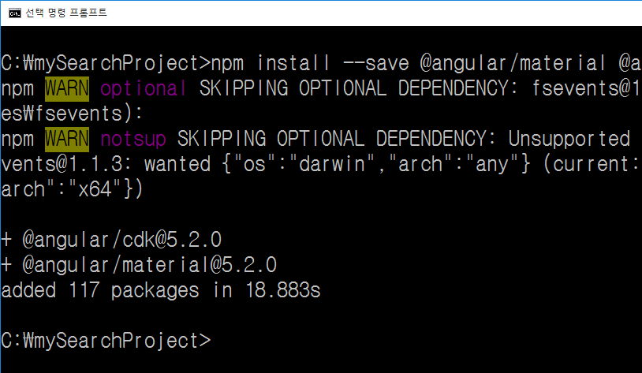

Angular 강좌(4) - Angular Material
Angular 강좌는 여러 절로 구성되어 있습니다.
- Angular 강좌(1) - Introduction
- Angular 강좌(2) - 개발환경세팅
- Angular 강좌(3) - Component
- Angular 강좌(4) - Angular Material
- Angular 강좌(5) - 실습(1)
- Angular 강좌(6) - Data Binding
- Angular 강좌(7) - 실습(2)
- Angular 강좌(8) - Material Table
- Angular 강좌(9) - 데이터공유(@Input)
- Angular 강좌(10) - 데이터공유(@Output)
- Angular 강좌(11) - 데이터공유(@ViewChild)
- Angular 강좌(12) - 데이터공유(Content Projection)
- Angular 강좌(13) - Service
- Angular 강좌(14) - Service Mediator Pattern
- Angular 강좌(15) - Service RxJS
- Angular 강좌(16) - Material Table Event
- Angular 강좌(17) - 중간 정리
- Angular 강좌(18) - Directive
- Angular 강좌(19) - Pipe
- Angular 강좌(20) - Component Lifecycle
Angular Material
Material Design은 모바일과 데스크탑 그리고 그 외 다양한 디바이스들의 application을 개발할 때
하나의 일관된 디자인을 적용하고자 Google이 공개한 design guideline입니다.
머티리얼 디자인(Material Design, 코드명: Quantum Paper)이란 플랫 디자인의 장점을 살리면서도 빛에 따른 종이의 그림자 효과를 이용하여 입체감을 살리는 디자인 방식을 말한다. 2014년 구글이 안드로이드 스마트폰에 적용하면서 널리 퍼지기 시작했다. 플랫 디자인과 마찬가지로 최소한의 요소만을 사용하여 대상의 본질을 표현하는 디자인 기법인 미니멀리즘(minimalism)을 추구한다.
( 자료출처 : https://ko.wikipedia.org )
제가 Design에 대한 관심과 지식이 상대적으로 많지 않아서 Material Design에 대한 정의는 위키에서 가져왔습니다.
여하간 이런 Material Design에 대한 concept을 Angular application에 적용하기 위해 만든 Component가 바로
Angular Material입니다.
우리의 예제는 이 Angular Material로 작성할 것이기 때문에 Angular Material을 어떻게 사용하는지에 대해서 먼저 알아볼 필요가 있습니다.
참고로 Angular Material은 정식버전이 나온지 얼마 되지 않았습니다. 해서 생각만큼 많은 Component와 기능을 지원하고 있지 못합니다. Angular Material Official HomePage의 공식 문서 역시 아직은 좀 사용하기 불편합니다. 차차 나아지겠죠 ^^;;
우리예제는 Bootstrap도 같이 이용합니다.
Bootstrap에 대해서는 그 때 알아보기로 하겠습니다.
자 그럼 Angular Material에 대해 알아보도록 하죠.
Angular Material & Angular Material CDK 설치
제일 먼저 해야 할 일은 Angular Material과 Angular Material CDK를 설치하는 것입니다.
우리가 만들어 놓은 mySearchProject에서 command 창을 열고 다음 명령을 수행시켜 package를 설치합니다.
( 현재 경로는 C:/mySearchProject 입니다. )
npm install --save @angular/material @angular/cdk

--save option은 npm@5부터 기본 option으로 바뀌었습니다. 즉, --save는 생략하셔도 됩니다. 잘 아시겠지만
저 명령을 수행하면 package.json의 dependencies에 설치된 패키지와 버전 정보가 기록되게 됩니다.
참고로 만약 개발 시에만 사용하는 package를 설치하실려면 --save-dev option을 주시면 됩니다. TypeScript와 같은것은
사실 transpiler이기 때문에 개발시에만 필요하고 실제 배포까지 할 필요는 없으니 TypeScript같은 건 --save-dev로
devDependencies에 포함시키는게 좋습니다. 그런데 우리는 그냥 전역으로 설치해서 쓰고 있죠 ^^;;
여하간 약간의 시간이 지나면 package가 설치됩니다.
Angular Animation Module 설치
몇몇개의 Material Component는 Angular Animation Module에 의존성을 가지고 있습니다. 따라서 다음 명령을 수행시켜 Angular Animation Module을 설치해야 합니다.
npm install --save @angular/animations
이 @angular/animations module은 내부적으로 WebAnimation API을 이용합니다. 그런데 모든 browser들이
이 API를 지원하는건 아닙니다. 만약 WebAnimation API를 지원하지 않는 browser를 이용할 경우는
여기를
클릭해서 나온 내용에 따라 따로 처리해 주셔야 합니다.
이제 우리 project에서 src/app 폴더 안에 있는 Root Module인 app.module.ts 파일을 열어 다음과 같이 수정합니다.
import { BrowserModule } from '@angular/platform-browser';
import { NgModule } from '@angular/core';
// BrowserAnimationsModule import 구문 추가
import { BrowserAnimationsModule } from '@angular/platform-browser/animations';
import { AppComponent } from './app.component';
@NgModule({
declarations: [
AppComponent
],
imports: [
BrowserModule,
BrowserAnimationsModule // BrowserAnimationsModule 추가
],
providers: [],
bootstrap: [AppComponent]
})
export class AppModule { }
사용할 Component import
설치가 다 되었으니 이제 사용할 Angular Material Module을 import해야 합니다. 사실 이부분은 나중에 View에 대한 HTML을 작성할 때 해야 되는 작업입니다. 어떤 Component를 이용하여 View를 구성할지 결정이 되어야 import할 수 있기 때문이지요.
나중에 추가할 내용이지만 일단 하나만 먼저 연습삼아 추가해보도록 하겠습니다.
여기서 사용할 것은 Material Table Component입니다. 해당 Component를 사용하기 위해 import하는 작업이 필요합니다.
추후에 구현에 필요한 Component들이 더 추가되어야 하는데 이런 Component들은 실습을 진행하면서 추가하도록 하겠습니다.
우리 project에서 src/app 폴더 안에 있는 Root Module인 app.module.ts 파일을 열어 다음과 같이 수정합니다.
import { BrowserModule } from '@angular/platform-browser';
import { NgModule } from '@angular/core';
// BrowserAnimationsModule import 구문 추가
import { BrowserAnimationsModule } from '@angular/platform-browser/animations';
// Material Table Component 사용을 위한 MatTableModule import
import { MatTableModule } from '@angular/material/table';
import { AppComponent } from './app.component';
@NgModule({
declarations: [
AppComponent
],
imports: [
BrowserModule,
BrowserAnimationsModule, // BrowserAnimationsModule 추가
MatTableModule // MatTableModule 추가
],
providers: [],
bootstrap: [AppComponent]
})
export class AppModule { }
사용할 Theme 설정
application에 적용할 Theme를 설정해 보도록 하죠. 기본적으로 제공되는 built-in theme는 현재 4가지가 존재하는데 그 중 하나를 설정하시면 됩니다.
우리는 Angular CLI를 이용하고 있기 때문에 src 폴더 안에 있는 styles.css 파일을
열어서 다음의 코드를 넣어주면 됩니다. styles.css 파일은 우리 application 전역에 적용되는
global CSS 파일입니다.
@import '~@angular/material/prebuilt-themes/indigo-pink.css';
만약 다른 theme를 이용하고 싶으면 여기 를 참조해 다른 이름의 CSS 파일을 이용하시면 됩니다.
Gestures 지원을 위한 HammerJS 설치
사용자 Gestures를 지원하기 위해 몇몇개의 Material Component들은 HammerJS에 의존하고 있습니다. 그렇게 때문에 이 HammerJS 역시 설치하고 설정까지 잡아줘야 합니다.
npm install --save hammerjs
설치가 끝나면 우리 application의 시작지점(entry point)인 main.ts 파일을 열어서 제일 상단에
다음과 같은 코드를 추가해 줘야 합니다.
// hammerjs import 추가
import 'hammerjs';
Material Icon 사용을 위한 설정
Material은 쉽게 사용할 수 있는 Icon을 제공해 줍니다.
마치 Font-Awesome처럼
사용할 수 있습니다. Material Icon을 사용하기 위해서는 index.html을 다음과 같이 수정합니다.
<!doctype html>
<html lang="en">
<head>
<meta charset="utf-8">
<title>BookSearchAngular</title>
<base href="/">
<meta name="viewport" content="width=device-width, initial-scale=1">
<link rel="icon" type="image/x-icon" href="favicon.ico">
<!-- Material Icon 설정 -->
<link href="https://fonts.googleapis.com/icon?family=Material+Icons" rel="stylesheet">
</head>
<body>
<app-root></app-root>
</body>
</html>
Material Icon의 사용방법에 대한 자세한 내용은 여기 를 확인해 보시면 됩니다.
Angular Material을 사용하기 위한 설정이 끝났습니다.
이제 Angular Material Official HomePage의
Components 메뉴를 클릭해 사용할 Component의 종류와 사용방법을 찾아 적절하게 작성만 해 주면 될 듯 싶습니다. 다음 포스트에서
Angular Material을 이용해 화면구성과 Component 설정을 해 보도록 하겠습니다.
End.
Angular 강좌는 아래의 책과 사이트를 참조했습니다. 조금 더 자세한 사항을 알고 싶으시면 해당 사이트를 방문하세요!!
- Angular Official HomePage
- Angular Material Official HomePage
- Build a Mobile App with Angular 2 and Ionic 2
- Angular 첫걸음 - 한빛미디어
- 제대로 배우는 Angular 4 - 비제이퍼블릭